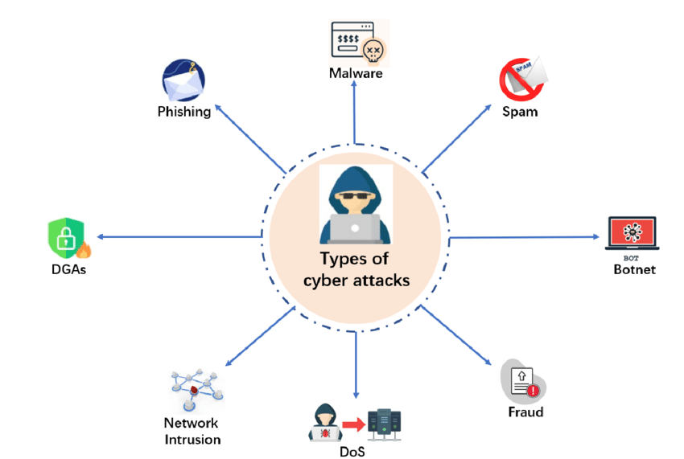
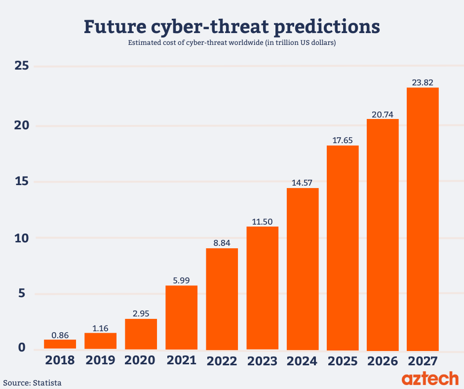

Scenario Of Attacks
Research Library
News


- A Study Of Cyber Security Challenges And It's Emergning Trends On Latest Technologies
- A Comprehensive Review Study Of Cyber-Attacks And Cyber Security; Emerging Trends And Recent Developments
- Cyber Security: Challenges For Society
- Cybersecurity Issues And Challenges: In Brief
- Smart City And Cyber-Security; Technologies Used, Leading Challenges And Future Recommendations
- Defining Cyber Security
- Cyber Warfare: Issues And Challenges
- Ethical Hacking
- Automated Penetration Testing: An Overview
- A Public Policy Perspective Of The Dark Web
- Power/Freedom On The Dark Web: A Digital Ethnography Of The Dark Web Social Network
- Red Teaming The Red Team: Utilizing Cyber Espionage To Combat Terrorism
- Psychological Profilling Of Hacking Potential
- Dark Traits And Hacking Potential
- Ethical Hacking: The Story Of A White Hat Hacker